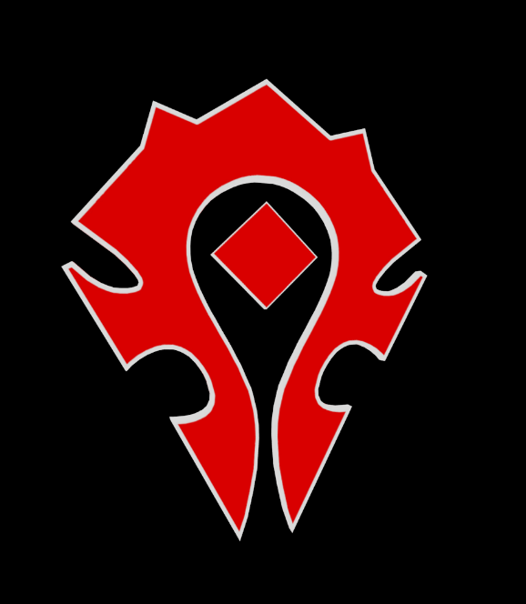

The game that stole 10 years of my life...
World of Warcraft is an MMORPG(Massive Multiplayer Online Role-Playing Game). It released in November of 2004 and has, at its peak, had over 12 million players world-wide. Players create a character from either the
Horde or Alliance factions. From within these factions, they choose from races such as Humans, Orcs, Elves, Trolls, and Dwarves. The game is rich in lore, which any fan of Tolkien or George RR Martin could appreciate.
Your character grows in strength and reknown in the world as you play and become stronger (referred to as 'leveling up'). While it is possible to play alone, much of the game's allure comes from playing with other players in groups from 5 players all the way up to 40. You can band together to explore dungeons or take on massive monsters such as dragons or demons. Or, should you choose, you can spend your time warring with the other faction in battles or gladiatorial arena matches.
Your character grows in strength and reknown in the world as you play and become stronger (referred to as 'leveling up'). While it is possible to play alone, much of the game's allure comes from playing with other players in groups from 5 players all the way up to 40. You can band together to explore dungeons or take on massive monsters such as dragons or demons. Or, should you choose, you can spend your time warring with the other faction in battles or gladiatorial arena matches.

I began playing in 2004 just after release. A friend talked me into buying the game and I was hooked ever since. In my time playing I have made friends in Australia, Canada, New Zealand, and Germany. I have traveled to
Toronto to meet friends I made in person. I've leveled numerous characters to the limit and completed hundreds of dungeons and raids. I have also helped friends get through personal troubles and been a shoulder to cry
on for someone 400 miles away. I've enjoyed every minute of the game and every laugh I've shared with people I've never seen.